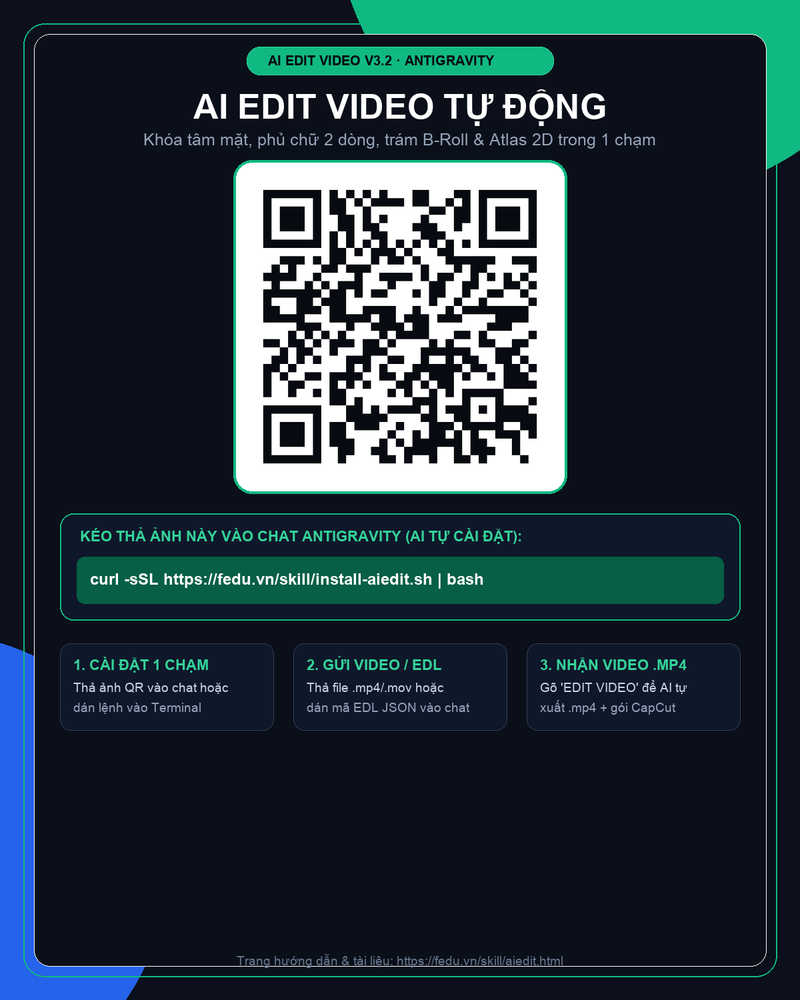
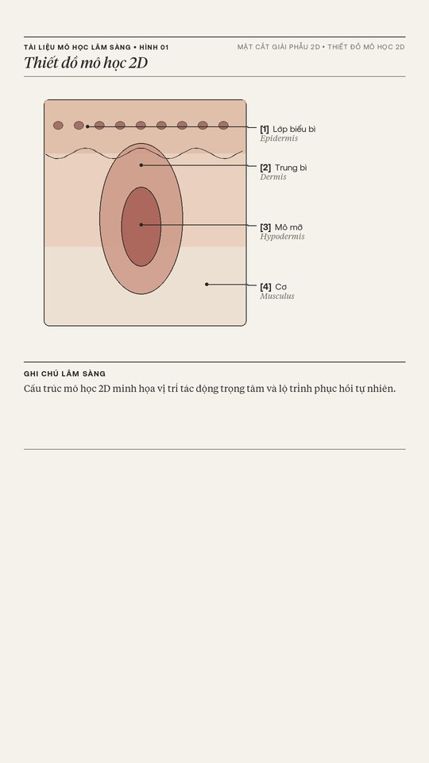
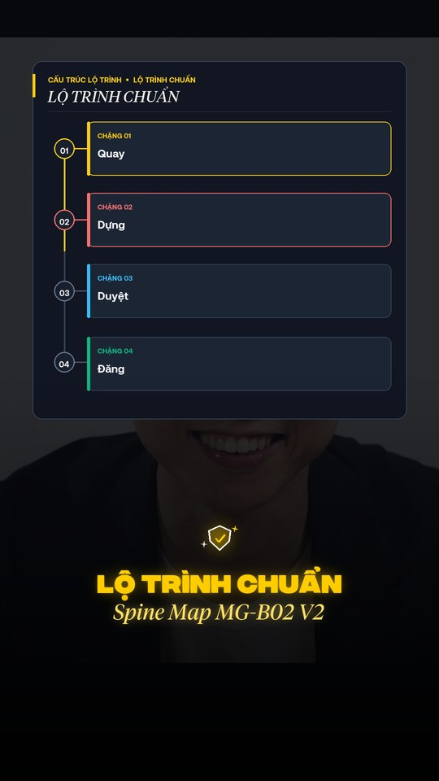

AI Edit Video V3.2
Biến video quay thô thành video hoàn chỉnh chỉ trong 1 lệnh. Tự động khóa tâm mặt chính giữa, phủ chữ 2 dòng phát sáng, trám B-Roll 9:16, vẽ thiết đồ khoa học 2D & trộn 8 SFX phòng thu.
Cài Đặt Kỹ Năng
3 bước đơn giản cho người mới cài Antigravity.
-
1
Mở ứng dụng Terminal trên máy (Mac: Cmd+Space → gõ Terminal) hoặc kéo thả ảnh QR bên cạnh vào khung chat Antigravity
-
2
Bấm Copy lệnh bên cạnh, dán vào Terminal rồi nhấn Enter (tự động cài đặt Font, 8 SFX & FFmpeg đến khi báo ✅ CÀI ĐẶT THÀNH CÔNG)
-
3
Thả video
.mp4 / .movvào chat và gõ"EDIT VIDEO"(hoặc dán mãEDL JSON) để xuất video hoàn chỉnh
✨ Tự động hóa môi trường 100%:
• Tự tạo môi trường ảo Python riêng (~/.mfx_v3/venv), không lo xung đột thư viện.
• Tích hợp sẵn 8 Font chữ Editorial tiếng Việt, 8 SFX phòng thu và bộ dựng FFmpeg.

⬇ Tải ảnh QR về máy
Cách 1: Tải ảnh QR → thả vào khung chat Hệ Thống AI → AI tự cài.
Cách 2: Copy lệnh bên dưới dán vào Terminal.
curl -sSL https://fedu.vn/skill/install-aiedit.sh | bash
Hỗ trợ macOS / Linux
4 Chế Độ Hậu Kỳ Tích Hợp Sẵn Trong Gói
Đóng gói tinh gọn (~1.9MB), hoạt động ngay sau khi cài đặt mà không cần cấu hình thủ công.
Khóa Tâm Mặt & Chữ Phát Sáng 2 Dòng
Tự động dò vết cắt jump-cut và khóa tâm mặt về chính giữa khung hình. Tự động cắt chuẩn 9:16 cho cả video quay ngang, phủ nền Gradient đen đáy, Icon Vector phát sáng và chữ 2 dòng FD Integral + FD Tiempos Italic.
Bản Vẽ Khoa Học 2D Trên Giấy #F5F2EB
Dành cho video Chuyên gia, Y khoa, Da liễu, Nha khoa. Tự động cân phẳng nền giấy y khoa cổ điển #F5F2EB, vẽ đường dẫn vuông góc [1]..[4] song ngữ và hộp Ghi chú lâm sàng sắc nét.
Sơ Đồ Lộ Trình Trục Dọc X=158
Trình bày quy trình 4 bước theo trục thẳng đứng bên trái (X = 158) với thanh tiến độ vàng #FACC15 chạy dọc từng chặng và 4 thẻ ngang chuẩn Swiss Dark.
Xuất Kép Video .MP4 + Gói PNG CapCut
Mỗi lần chạy tự động xuất đồng thời file <tên>_edit_v3.mp4 hoàn chỉnh (đã trộn 8 SFX phòng thu ở mức 10% không đè giọng nói), bộ ảnh mockups/ và thư mục chữ trong suốt capcut_png_pack/.
01. Khóa tâm mặt & Chữ phát sáng 2 dòng

02. Bản vẽ Khoa Học 2D (Giấy #F5F2EB)

03. Sơ đồ lộ trình trục dọc (MG-B02 V2)
Kết Quả Trước / Sau
Trước Khi Dùng AI Edit V3.2
- • Tốn 3–4 giờ căn chữ, tìm B-Roll và ghép SFX thủ công
- • Khuôn mặt bị giật lệch vị trí qua các vết cắt jump-cut
- • Video ngang 16:9 đưa vào dễ bị kéo méo hoặc tràn RAM
- • AI vẽ chữ tiếng Việt trực tiếp lên ảnh hay bị sai dấu
Sau Khi Cài AI Edit V3.2
- • Xuất thẳng file .mp4 hoàn chỉnh chỉ trong 1 lệnh Zero-Stop
- • Tự động khóa cứng tâm mặt chính giữa (Auto Face-Lock ✓)
- • Render 2-Pass Streaming siêu nhẹ (< 350MB RAM ✓)
- • Chữ tiếng Việt & Atlas 2D vẽ bằng Vector Pillow chuẩn 100%
Tốc độ xử lý: Nhanh gấp ~10 lần dựng thủ công (Bảo toàn 100% giọng gốc + SFX 10%)